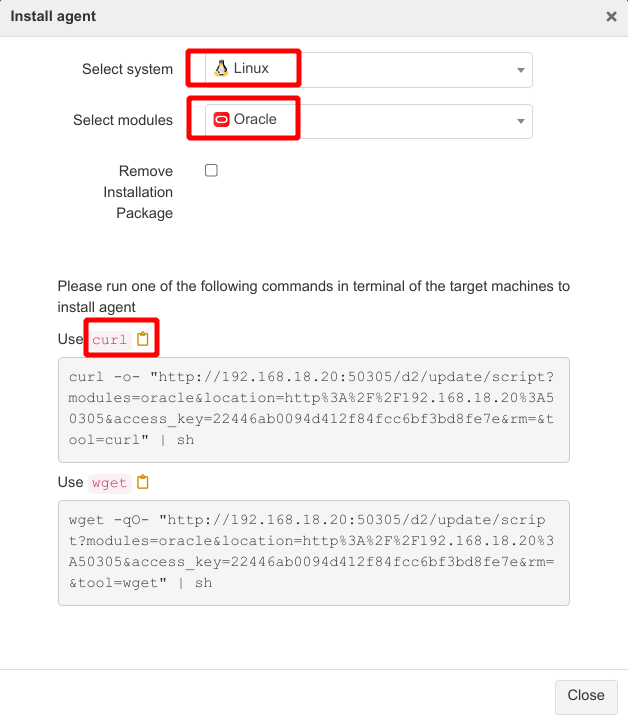
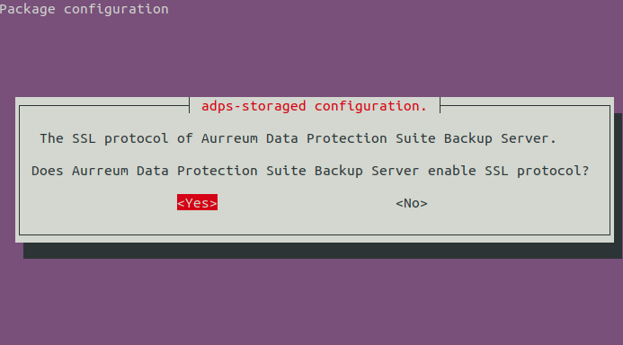

Installation Guide#
Introduction#
This guide describes how to properly install the ADPS backup server and storage server.

ADPS components#
ADPS components include Backup Server, Storage Server, and Agent.
Backup Server: Responsible for managing the connections and business information of Agents and the Storage Servers.
Storage Server: Responsible for receiving and storing data as well as processing the recycling mechanisms of backup data. Backup Server and Storage Server components can be installed on the same or different machines. One backup server can manage multiple storage servers to achieve storage scalability.
Agent: Responsible for responding to the commands of the backup console and performing the backup/restore jobs. The Agent is installed on the server where users store business data. It will be managed by the backup server after their connection.
Installation process#
This document introduces the process of deploying a new ADPS system in which the backup server and the storage server are on the same machine (all-in-one configuration). Please follow the steps below.
Step 1. Prepare the environment
Step 2. Update the kernel
Step 3. Install MariaDB
Step 4. Install ADPS
Step 5. Connect the Catalog database
Step 6. Install online manual
Step 7. Install optional modules
Step 8. Install auxiliary tools
Step 9. Open access ports
Step 10. Check the service state
Server requirements#
The followings are the hardware requirements for the ADPS backup/storage server. You can refer to the server configuration of the Aurreum Data Protection Appliance (ADPA). If you use an outdated server, problems such as incompatibility may occur.
Architecture
A physical server or virtual machine with an x86-64 architecture is required.
Memory
Memory# Item
Standard configuration
Minimum configuration
Note
Software installation
More than 32G
More than 16G
Less than 16G may result in unacceptable performance.
With CDM or data de-duplication service
At least 1.5‰ of the data disk
More than 16G
For example, if the data disk space is 64T, the storage server memory should be at least 96G.
Storage
The storage of the all-in-one appliance should be divided into root partition and data partition. Please prepare at least two disks for installation.
Storage# Storage
Recommendation
Root partition
Prepare two solid-state disks (SSDs) for the root partition and set up RAID 1. If you select Auto Mode for installation, the disk space for the root partition should be more than 60 G.
Data partition
Use separate disks to configure the XFS data partition and the root partition. With multiple disks, set up RAID. The size of a data partition depends on the hardware configuration of the server and the backup business volume.
Network
Use at least two network interface cards (GE/10GE) to isolate networks for different usages such as management and storage. An iSCSI/FC HBA card is also required for LAN-free and synthetic backup features. See the Appendix for compatible models of the supported HBA card.
Note
For hardware servers other than ADPA, you need to handle the compatibility issues of hardware devices and system software by yourselves, including network interface card and HBA card.
Operating system
The following operating systems are supported for the backup/storage server:
Operating system# Operating system
CPUarchitecture
Operating system bits
Ubuntu 20.04
x86
64
CentOS 7.6
x86
64
File system
(1) Root disk
Use the Logical Volume Manager (LVM) to create a volume group (VG) (
systemvg) on the system disk and then create a logical volume (LV) on thesystemvg. The recommended system partitions are:Root disk# Partition
Mount point
Partition size
File system
boot
/boot512 MiB
ext2
rootlv
/32 GiB and above
xfs
swaplv
swap16 GiB and above
swap
(2) Data disk
Create an XFS or ZFS file system on the data disk. For LAN-free and synthetic backup features, create a ZFS file system. For other scenarios, create an XFS file system.
XFS file system
Use LVM to create a VG (
datakistvg) on the data disk and create a LV (datakistlv) ondatakistvg.XFS file system# Partition
Mount point
Capacity
File system type
datakistlv
/datakistAll data disk space
XFS
ZFS file system
To create a ZFS file system on the data disk, configure JBOD mode (pass-through mode) on the RAID controller. Use the zpool create command to create a pool (
datakist) on the data disk and then mount the pool to the/datakistdirectory.ZFS file system# ZFS pool
Mount point
Capacity
File system type
datakist
/datakistAll data disk space
ZFS
First, check the device ID of each hard disk. For example,
/dev/disk/by-id/wwn-0x5000cca271c7dcd2is the device ID of/dev/sda.ls -l /dev/disk/by-id/
Create a zpool. Take 24 HDDs for example. First, check the HDD physical sector size.
sudo blockdev --getpbsz /dev/disk/by-id/wwn-0x5000cca271c7dcd2 4096
If the physical sector size of the disk is 4 KiB (i.e. “Advanced Format”: https://en.wikipedia.org/wiki/Advanced_Format), then:
sudo zpool create -f -m /datakist -o ashift=12 datakist \ raidz2 \ /dev/disk/by-id/wwn-0x5000cca271c7dcd2 /dev/disk/by-id/wwn-0x5000cca271c81fa3 /dev/disk/by-id/wwn-0x5000cca271c8259e \ /dev/disk/by-id/wwn-0x5000cca271c8273b /dev/disk/by-id/wwn-0x5000cca271c82b67 /dev/disk/by-id/wwn-0x5000cca271c82d9e \ /dev/disk/by-id/wwn-0x5000cca271c83674 /dev/disk/by-id/wwn-0x5000cca271c836e4 /dev/disk/by-id/wwn-0x5000cca271c840eb \ /dev/disk/by-id/wwn-0x5000cca271c846dd /dev/disk/by-id/wwn-0x5000cca271c848a6 /dev/disk/by-id/wwn-0x5000cca271c8509f \ raidz2 \ /dev/disk/by-id/wwn-0x5000cca271c76773 /dev/disk/by-id/wwn-0x5000cca271c79f59 /dev/disk/by-id/wwn-0x5000cca271c8080a \ /dev/disk/by-id/wwn-0x5000cca271c82df7 /dev/disk/by-id/wwn-0x5000cca271c8371d /dev/disk/by-id/wwn-0x5000cca271c837e9 \ /dev/disk/by-id/wwn-0x5000cca271c837f7 /dev/disk/by-id/wwn-0x5000cca271c84cf8 /dev/disk/by-id/wwn-0x5000cca271c84cfd \ /dev/disk/by-id/wwn-0x5000cca271c84cff /dev/disk/by-id/wwn-0x5000cca271c8508f /dev/disk/by-id/wwn-0x5000cca271c85193
If the physical sector size of the disk is 512 B, then:
sudo zpool create -f -m /datakist datakist \ raidz2 \ /dev/disk/by-id/wwn-0x5000cca271c7dcd2 /dev/disk/by-id/wwn-0x5000cca271c81fa3 /dev/disk/by-id/wwn-0x5000cca271c8259e \ /dev/disk/by-id/wwn-0x5000cca271c8273b /dev/disk/by-id/wwn-0x5000cca271c82b67 /dev/disk/by-id/wwn-0x5000cca271c82d9e \ /dev/disk/by-id/wwn-0x5000cca271c83674 /dev/disk/by-id/wwn-0x5000cca271c836e4 /dev/disk/by-id/wwn-0x5000cca271c840eb \ /dev/disk/by-id/wwn-0x5000cca271c846dd /dev/disk/by-id/wwn-0x5000cca271c848a6 /dev/disk/by-id/wwn-0x5000cca271c8509f \ raidz2 \ /dev/disk/by-id/wwn-0x5000cca271c76773 /dev/disk/by-id/wwn-0x5000cca271c79f59 /dev/disk/by-id/wwn-0x5000cca271c8080a \ /dev/disk/by-id/wwn-0x5000cca271c82df7 /dev/disk/by-id/wwn-0x5000cca271c8371d /dev/disk/by-id/wwn-0x5000cca271c837e9 \ /dev/disk/by-id/wwn-0x5000cca271c837f7 /dev/disk/by-id/wwn-0x5000cca271c84cf8 /dev/disk/by-id/wwn-0x5000cca271c84cfd \ /dev/disk/by-id/wwn-0x5000cca271c84cff /dev/disk/by-id/wwn-0x5000cca271c8508f /dev/disk/by-id/wwn-0x5000cca271c85193
After the creation, the zpool will be mounted to the /datakist directory automatically. You can use the
df -hcommand to check the results.Set the time zone
We recommend setting the time zone of the operating system as that of your current location. The command is:
sudo timedatectl set-timezone <your_time_zone>
Prepare software packages#
You can go to the Aurreum website or contact our technical support to get the required ADPS packages. The product versions installed on all components must be the same. Mixed version installation may result in abnormal Web access and functions. The following table shows the packages and their functions:
Software package |
Description |
|---|---|
adps-common-version-architecture.suffix |
A base package that must be installed. |
adps-backupd-version-architecture.suffix |
Provides ADPS backup server service. |
adps-storaged-version-architecture.suffix |
Provides ADPS storage server service. |
adps-nginx-version-architecture.suffix |
Provides ADPS Web management service. |
adps-datakist-version-architecture.suffix |
Feature pack that moves the ADPS file directory to |
adps-storaged-lanfree-version-architecture.suffix |
Feature pack of ADPS LAN-free and synthetic backup. |
adps-controller-version-architecture.suffix |
Feature pack that ADPS manages tape libraries. |
adps-nfsd-version-architecture.suffix |
Feature pack that ADPS mounts files. |
system-MariaDB-version.tar.gz |
ADPS database software package. |
kernel_version-zfs_version-ubuntu2004_architecture.tar.gz |
Kernel and ZFS tool package for Ubuntu 20.04. |
kernel_version-zfs_version-centos76_architecture.tar.gz |
Kernel and ZFS tool package for CentOS 7.6. |
Update the kernel#
If the data disk of the operating system uses the ZFS file system, you must update the kernel to the internal source version (not the public source version) before installing the ADPS software. Otherwise, it will affect the normal use of LAN-free and synthetic backup. To update the kernel, do the following:
Ubuntu
(1) Run the following commands with root privileges:
sudo tar -xf 5.4.0-132_zfs0.8.6_ubuntu2004_amd64_aurreum.tar.gz -C /home/aurreum/ #If you do not have the /home/aurreum directory, use the command sudo mkdir /home/aurreum to create the directory first secho deb [signed-by=/home/aurreum/ubuntu2004_amd64/repo.gpg] file:///home/aurreum/ubuntu2004_amd64 bionic main | sudo tee -a /etc/apt/sources.list.d/aurreum.list sudo apt-get update sudo apt-get install -y linux-{image,modules,modules-extra,headers}-5.4.0-132-generic linux-base linux-firmware
(2) After updating the kernel, you must restart the server.
CentOS
(1) Run the following commands with root privileges:
tar -zvxf 5.4.96-200.el7_zfs0.8.6_centos76_x86_64.tar.gz rpm -Uvh kernel/*
(2) After updating the kernel, you must restart the server.
Note
The kernel has hardware adaptation compatibility issues. Therefore, the hardware server is better in the same version as the ADPA. Otherwise, updating the kernel may lead to compatibility problems, like the server cannot be started or the operating system is damaged.
Install MariaDB#
Installation method
Ubuntu
sudo tar -zvxf Ubuntu2004_amd64_MariaDB10.6.tar.gz cd Ubuntu2004_amd64_MariaDB10.6 sudo sh install_MariaDB10.6.sh
CentOS
sudo tar -zvxf Centos7_x86-64_MariaDB10.6.tar.gz cd Centos7_x86-64_MariaDB10.6 sudo sh install_MariaDB10.6.sh
Set the root password
sudo systemctl start mariadb sudo mysqladmin -u root password 'xxxxxx' #(xxxxxx is the password that you set for the root user)
Modify the configuration file
Add sql_mode, remote access, and other settings in the MariaDB configuration file. Modify the
/etc/mysql/mariadb.conf.d/50-server.cnfconfiguration file on Ubuntu and the/etc/my.cnf.d/server.cnfconfiguration file on CentOS.(1) Add sql_mode
[mysqld] sql_mode='ONLY_FULL_GROUP_BY'
(2) Enable remote access. Set the bind address to 0.0.0.0
[mysqld] bind-address = 0.0.0.0
(3) Use root to log in to MariaDB and grant the root user the remote access privilege.
mysql -u root -p MariaDB [(none)]> GRANT ALL PRIVILEGES ON *.* TO 'root'@'%' IDENTIFIED BY 'xxxxxx'; #(xxxxxx is the password that you set for the root user) MariaDB [(none)]> FLUSH PRIVILEGES;
(4) Restart MariaDB
sudo systemctl restart mariadb
Set MariaDB to start on boot
sudo systemctl enable mariadb
Install the ADPS software#
Ubuntu#
In the directory where the installation package is located, run the following commands in sequence with root privileges:
sudo dpkg -i adps-common_version_amd64.deb adps-backupd_version_amd64.deb adps-storaged_version_amd64.deb adps-nginx_version_amd64.deb adps-datakist_version_amd64.deb|| sudo apt-get -y -f install
Configure adps-storaged and set the IP address for the backup server, e.g., 192.168.88.239

Set the port for the backup server. The default port is 50305, which means that data is transferred without encryption. You can encrypt the data by modifying the port to 60305.

If you enter 50305 in the previous step, choose “No” to disable the SSL protocol. If you enter 60305, choose “Yes” to enable the SSL protocol.

Wait for the installation to complete. After the installation, symbolic links will be created between the ADPS-related directories and the /datakist under the data disk.
Note
Install the adps-datakist package after the installation of the adps-storaged package. Otherwise, the /datakist directory space may not be available.
CentOS#
In the directory where the installation package is located, install the packages in sequence with root privileges:
rpm -i adps-common_version_x86_64.rpm adps-backupd_version_x86_64.rpm adps-storaged_version_x86_64.rpm adps-nginx_version_x86_64.rpm rpm -i adps-datakist_version_x86_64.rpm
Wait for the installation to complete. After the installation, symbolic links will be created between the ADPS-related directories and the
/datakistunder the data disk.After the installation, configure adps-storaged:
/etc/init.d/adps-storaged config Please input Aurreum Data Protection Suite Backup Server host[]: ##Enter the IP address of the backup server here, e.g., 192.168.88.239 Please input Aurreum Data Protection Suite Backup Server port[]: ##Enter the port of the backup server here. The default port of the system: 60305 Does Aurreum Data Protection Suite Backup Server enable SSL protocol?[N]: ##Enter Yes here Saving adps-storaged config[OK]: ##Press "Enter" to save the modification Do you want to restart adps-storaged[Y]: ##Enter Y here to restart the service
Connect catalog to MariaDB#
The ADPS catalog should be connected to the MariaDB database.
sudo /etc/init.d/adps-backupd config mysql
Please input mysql host[]: 127.0.0.1
Please input mysql port[3306]:
Please input mysql user[root]:
Please input mysql password:
Loaded /opt/aurreum/adps/lib/libmysqlclient.so.18 with flags 0x00000101(RTLD_LAZY | RTLD_GLOBAL)
Test MySQL connectivity OK!
Select Y when you see the following prompt;
Do you want to restart backupd? [Y]: y
[ ok ] Restarting adps-backupd (via systemctl): adps-backupd.service.
Install optional modules#
Install the LAN-Free module#
If the data disk of the operating system uses the ZFS file system, you should install the adps-storaged-lanfree software package on the storage server to realize LAN-free backups and synthetic backups through iSCSI/FC Target. The installation commands are:
Ubuntu#
Install the lio-utils and zfsutils-linux dependent packages.
sudo tar -xf 5.4.0-132_zfs0.8.6_ubuntu2004_amd64_aurreum.tar.gz -C /home/aurreum/ #If you do not have the /home/aurreum directory, use the command sudo mkdir /home/aurreum to create the directory first sudo echo deb [signed-by=/home/aurreum/ubuntu2004_amd64/repo.gpg] file:///home/aurreum/ubuntu2004_amd64 bionic main | sudo tee -a /etc/apt/sources.list.d/aurreum.list sudo apt-get update sudo apt-get install -y zfs* lio-utils
Install the adps-storaged-lanfree software package.
sudo dpkg -i adps-storaged-lanfree_version_amd64.deb
CentOS#
Install the lio-utils and zfsutils-linux dependent packages.
tar -zvxf 5.4.0-115_zfs0.8.6_ubuntu2004_amd64.tar.gz rpm -ivh lio-zfs-utils/lio-utils-3.1-11.noarch.rpm rpm -ivh lio-zfs-utils/zfs-utils/*
Install the adps-storaged-lanfree software package.
rpm -ivh adps-storaged-lanfree_version_amd64.deb
Install the Tape Library Controller module#
To back up data to the tape library, install the adps-controller package on a server and make the server the tape library controller. The tape library controller must be connected to the tape library over the IP-SAN or FC-SAC network. adps-controller handles all requests from the agent to the tape library. The installation commands are:
Ubuntu#
sudo dpkg -i adps-controller_version_amd64.deb
CentOS#
rpm -ivh adps-controller_version_x86_64.rpm
Install the File Instant Recovery Module#
To achieve file instant recovery, install the adps-nfsd package on the storage server. Then the file backup sets in storage pools can be mounted to the host with the agent installed. The installation commands are:
Ubuntu#
sudo dpkg -i adps-nfsd_version_amd64.deb
CentOS#
rpm -ivh adps-nfs_version_x86_64.rpm
Install auxiliary tools#
We recommend installing auxiliary tools such as lzop, zip, sqlite3, and rpm gnupg to facilitate subsequent system operation and maintenance.
Open access ports#
For the safe running of the system, open the firewall and set the access ports according to the following list.
Port |
Function |
Protocol |
Encrypted |
|---|---|---|---|
80 |
Nginx server HTTP |
TCP (HTTP) |
No |
443 |
Nginx server HTTPS |
TCP (HTTPS) |
Yes |
22 |
SSH service |
TCP |
No |
3306 |
MySQL service |
TCP |
No |
Random port (From 32768 to 65535) |
rpc.mountd (NFS service dependency) |
TCP |
No |
50305 |
Data transfer |
TCP (HTTP) |
No |
60305 |
Data encryption |
TCP (HTTPS) |
Yes |
3260 |
iSCSI |
TCP |
No |
50306 |
Data transfer |
TCP |
No |
60306 |
Data encryption |
TCP |
Yes |
50308 |
Loading and unloading tapes |
TCP |
No |
60308 |
Loading and unloading tapes |
TCP |
Yes |
50309 |
Agent interprocess communication |
TCP |
No |
60309 |
Agent interprocess communication |
TCP |
Yes |
10000 |
NDMP backup and restore |
TCP |
NDMP |
Check the service state#
After the installation, check whether the following ADPS services are running normally:
adps-backupd
adps-storaged
adps-nginx
adps-controller
mariadb
For example, you can check the adps-backupd service using the following commands. The active state means that the service is running normally. The query commands for other services are the same.
/etc/init.d/adps-backupd status
● adps-backupd.service - adps backup server daemon
Loaded: loaded (/lib/systemd/system/adps-backupd.service; enabled; vendor preset: enabled)
Active: active (running) since Tue 2022-05-17 13:54:37 CST; 2 days ago
Main PID: 6064 (adps-backupd)
Tasks: 11 (limit: 1111)
CGroup: /system.slice/adps-backupd.service
└─6064 /opt/aurreum/adps/bin/adps-backupd --reactor=dev_poll -f /etc/opt/aurreum/adps/backupd/svc.conf.d
May 17 13:54:37 ubuntu2004 systemd[1]: Started adps backup server daemon.
May 17 13:54:37 ubuntu2004 adps-backupd[6064]: Created 'dev_poll' reactor
Web console#
After the installation, enter the IP or domain name on the browser. If you can access the ADPS Web console, the installation is successful.

You must import a product license to use the Web console. Download the “Request License” file and send it to Aurreum technical support. We will send you a file with a license certificate after approval. For details, see the Administrator’s Guide.
Appendix#
Uninstall the software#
Before you uninstall the software, please confirm that you want to uninstall it. You cannot retrieve relevant data after uninstallation.
Ubuntu#
Uninstall a module. For example, to uninstall the controller module, run the following command with root privileges:
sudo apt-get purge adps-controller
To uninstall all ADPS software, run the following command with root privileges:
sudo apt-get purge adps-common
Note
This command will thoroughly remove the packages and configuration files.
After the above operation, check if there is any ADPS service.
sudo dpkg -l|grep adps
CentOS#
Uninstall a module. For example, to uninstall the controller module, run the following command with root privileges:
rpm -e adps-controller
To uninstall all ADPS software, run the following command with root privileges:
rpm -e `rpm -qa | grep adps`
After the above operation, check if there is any ADPS service.
rpm -qa|grep adps
Reconfigure storaged#
You can run the following commands to reconfigure adps-storaged when the server address is changed or you have inputted the wrong backup server address, port, and protocol.
/etc/init.d/adps-storaged config
Please input Aurreum Data Protection Suite Backup Server host[192.168.20.115]: 192.168.87.115
Please input Aurreum Data Protection Suite Backup Server port[50305]:
Does Aurreum Data Protection Suite Backup Server enable SSL protocol? [N]:
Saving adps-storaged config *
Do you want to restart adps-storaged? [Y]:
[....] Restarting adps-storaged (via systemctl): adps-storaged.service
. ok
Supported FC HBA List#
Model |
Port |
Supported speed (GBit/s) |
|---|---|---|
QLE2560 |
1 |
2, 4, 8 |
QLE2562 |
2 |
2, 4, 8 |
QLE2670 |
1 |
4, 8, 16 |
QLE2672 |
2 |
4, 8, 16 |
QLE2690 |
1 |
8, 16, 32 |
QLE2692 |
2 |
8, 16, 32 |